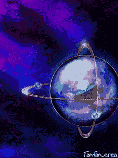
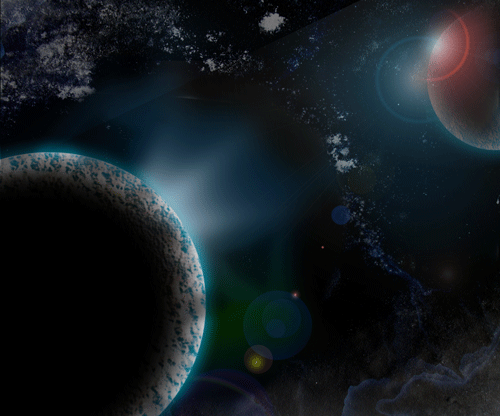

Universul cosmic
Civilizatiile extraterestre pot trai in gaurile negre!

Pamântul a avut în trecut doua Luni!

Limpezoiu Sandra Madalina
Clasa XII i1
Universul reprezinta lumea în totalitatea ei,
probabil ca nemarginita în timp si spatiu,
infinit de variata în ceea ce priveste formele pe care le iau materia,
energia si informatia în procesul dezvoltarii lor perpetue.